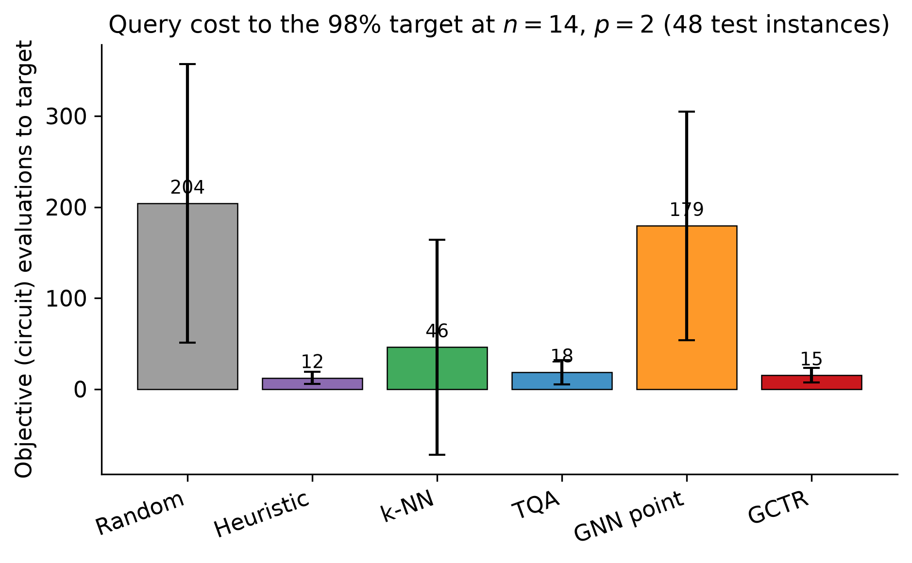

In‑Distribution Cost and Attainment
GCTR reaches \(48/48\) targets at capped cost \(15.0\pm7.8\) calls and mean exact expectation ratio 0.858. The supervised concentration heuristic is online‑cheaper, also reaches \(48/48\), and records \(12.33\pm6.45\) (paired \(p=2.6488\times10^{-4}\)). TQA reaches \(48/48\) at \(18.48\pm13.48\), with no established cost difference from GCTR (\(p=0.0683\)). Random restarts, k-NN, and the GNN point initializer reach \(37/48\), \(42/48\), and \(20/48\), with capped costs \(203.9\pm152.9\), \(52.94\pm131.93\), and \(264.42\pm164.02\), respectively.
